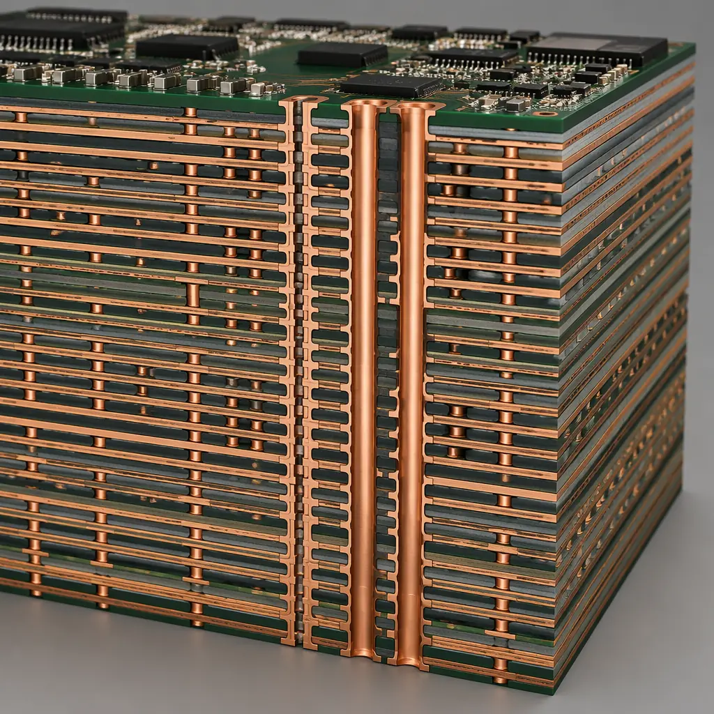
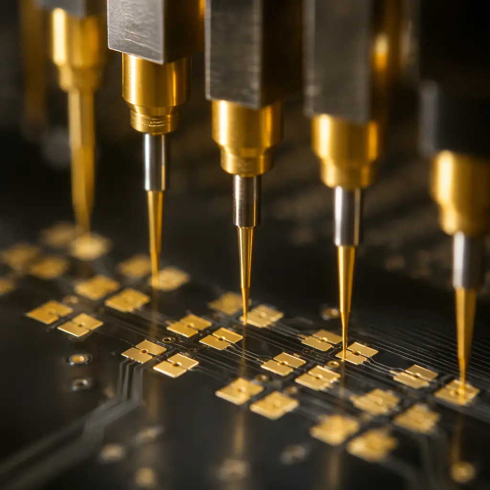

Semiconductor test is the gatekeeper of chip quality. Before any IC reaches a system board, it passes through automated test equipment (ATE) — and the PCB that sits between the tester and the device under test is one of the least discussed but most consequential components in the entire semiconductor supply chain. Whether you're sourcing a load board for a Teradyne UltraFLEX, a probe card substrate for wafer sort, or a burn-in board for HTOL reliability testing, the PCB requirements are radically different from production-grade boards. This article breaks down what matters: layer counts, materials, impedance tolerances, and the manufacturing capabilities needed to produce ATE-grade PCBs at scale.
At Huaxing PCBA, we manufacture ATE test boards for semiconductor test houses and OSAT providers across Asia and North America. Our facility processes over 80,000 ㎡ of PCBs monthly — including ultra-high-layer-count boards with polyimide and BT substrates — across 8 SMT lines with automated optical inspection at every stage.
What Makes ATE PCBs Different from Standard Production Boards
An ATE load board doesn't just route signals — it must preserve signal integrity across hundreds of channels simultaneously while withstanding thousands of insertion cycles on pogo-pin interfaces. The board itself becomes part of the measurement path. Standard FR-4 production PCBs with ±10% impedance tolerance won't survive this environment. Here are the four dimensions where ATE boards diverge from conventional PCBs:
Layer Count and Aspect Ratio
ATE load boards routinely exceed 40 layers, with some advanced probe card substrates reaching 60+ layers. The aspect ratio (board thickness to smallest drilled hole diameter) often pushes past 12:1 — well beyond the 8:1 typical of production PCBs. Every additional layer pair adds crosstalk isolation but also introduces registration tolerance stacking that must be controlled to within ±25 μm layer-to-layer. For context on how high-layer-count boards manage signal routing, see our PCB stackup design guide.
Impedance Control Tolerance
While standard controlled-impedance PCBs target ±10% on differential pairs, ATE boards demand ±5% or tighter — especially on 50 Ω single-ended channels operating above 2 GHz. This requires not just tighter etch tolerance but also precise control of dielectric thickness and Dk across temperature. A 2% Dk variation in a prepreg layer can shift impedance by 3–4 Ω on a long trace, enough to corrupt eye diagrams at multi-gigabit data rates. Our impedance control deep-dive covers the manufacturing parameters that drive tolerance.
Contact Pad Durability
Load board pads endure 500,000+ pogo-pin contact cycles over the board's lifetime. Standard ENIG (electroless nickel immersion gold) with 3–5 μin of gold wears through within the first 50,000 cycles. ATE boards typically specify hard gold plating — 30–50 μin of gold over nickel with a hardness of 130–200 Knoop — on all contact pads. The gold must be pure enough (Type III, 99.9% Au) to prevent oxide formation that increases contact resistance over time.
Thermal Stability Across Temperature Ranges
Burn-in boards operate at 125°C to 175°C ambient for extended durations — sometimes 1,000 hours continuously. Standard FR-4 has a Tg of 130–140°C, which means the substrate is already in its glass transition region during burn-in testing. The Z-axis CTE (coefficient of thermal expansion) above Tg is 3–5× the below-Tg value, causing plated through-hole barrel cracking. This is why burn-in boards exclusively use high-Tg polyimide (Tg > 250°C) or BT/epoxy blends (Tg 180–210°C).
Procurement Reality: A 40-layer ATE load board with polyimide substrate, ±5% impedance, and hard-gold pads typically costs 8–15× more per unit area than an equivalent-layer-count FR-4 production board. The cost driver isn't just materials — it's the 3–5× longer lamination cycle, lower panel utilization, and 100% electrical test requirement that add yield loss at every stage.
Load Board Manufacturing Specifications
Load boards are the largest and most complex of the three ATE PCB types. They interface directly with the tester's pin electronics on one side and the device handler or prober on the other. A typical load board for a system-on-chip (SoC) test application handles 1,024 to 4,096 digital channels plus analog, RF, and power domains — all on a single board.

| Parameter | Standard ATE Load Board | High-Performance Load Board | Huaxing Capability |
|---|---|---|---|
| Layer Count | 24–36 | 40–60 | Up to 60 |
| Board Thickness | 2.4–3.2 mm | 3.2–6.4 mm | Up to 8.0 mm |
| Min. Trace/Space | 75/75 μm | 50/50 μm | 50/50 μm |
| Impedance Tolerance | ±10% | ±5–7% | ±5% |
| Via Type | Through-hole + blind | Stacked microvias + buried | All types incl. skip vias |
| Surface Finish (Pads) | ENIG | Hard gold 30–50 μin | ENIG / ENEPIG / Hard Gold |
| Dielectric Material | FR-4 High-Tg | Polyimide / BT / Megtron 6 | All grades |
| Dk Tolerance | ±0.05 | ±0.02 | ±0.02 |
One of the most critical — and frequently overlooked — specifications for load boards is dielectric thickness uniformity. On a 40-layer board, the cumulative tolerance stack of individual prepreg and core layers can push the finished thickness outside the ±10% window that most tester docking mechanisms are calibrated for. Buyers should specify layer-to-layer registration within ±25 μm and finished thickness within ±8%, not the industry-default ±10%.
Via strategy also deserves attention. Load boards with >30 layers almost always require backdrilling to remove stub resonances on high-speed signal vias. Stubs longer than 15 mil at 10 Gbps can create a quarter-wave resonance that appears as a deep null in the insertion loss plot — directly corrupting test results. Backdrill depth must be controlled to within ±50 μm of the target layer, which requires precision depth-controlled drilling equipment and post-drill electrical verification.
Probe Card PCB Substrates — What's Different
Probe cards occupy a distinct niche within ATE PCB manufacturing. Unlike load boards, which mate with tester electronics, probe cards make direct physical contact with the wafer or individual die — often at pitches below 100 μm. The PCB substrate in a probe card serves as a space transformer, fanning out from the tight die-level pitch to the wider pitch of the tester interface.

Via-in-Pad as Standard, Not Optional
Probe card substrates routinely use via-in-pad structures because the pad pitch leaves no room for dog-bone fanouts. Each microvia must be filled and planarized — typically with copper-filled via plating followed by chemical-mechanical planarization (CMP) — to produce a flat landing surface for probe needles. Unfilled or dimpled vias create height variation across the probe array, which translates directly to inconsistent contact force and potential die damage during touchdown.
CTE Matching to Silicon
Wafer probing happens across temperature ranges from -40°C to +150°C. If the probe card PCB substrate has a CTE of 14–16 ppm/°C (typical FR-4) while the silicon wafer is at 2.6 ppm/°C, the differential expansion across a 300 mm wafer creates probe tip misalignment of tens of microns per thermal cycle. High-end probe card substrates specify CTE values below 8 ppm/°C — achievable with ceramic-filled BT laminates or low-CTE polyimide grades. For background on substrate material selection, refer to our guide to ceramic, PTFE, and polyimide substrates.
Low Dk/Df at High Frequency
RF-capable probe cards for mmWave IC test (24 GHz and above) demand dielectric materials with Dk below 3.5 and Df below 0.004 at the operating frequency. Standard FR-4 with Dk ≈ 4.2–4.5 and Df ≈ 0.02 adds unacceptable insertion loss and phase error. Rogers 4350B (Dk 3.48, Df 0.0037), Megtron 6 (Dk 3.4, Df 0.002), and PTFE-based laminates become necessary — but each comes with its own processing challenges that impact panel yield.
Burn-In Board Materials and Thermal Design
Burn-in boards operate in the harshest thermal environment of any PCB type. They sit inside burn-in ovens at 125–175°C ambient, with devices dissipating additional heat, for continuous runs of 168 to 1,000 hours. Every material choice — from the substrate resin system to the solder mask to the surface finish — must survive this thermal soak without degradation.
| Material | Tg (°C) | Td (°C) | Z-CTE (ppm/°C) | Dk @ 1 GHz | Best For |
|---|---|---|---|---|---|
| Standard FR-4 | 130–140 | 310–330 | 50–70 (above Tg) | 4.2–4.5 | Not suitable for burn-in |
| High-Tg FR-4 | 170–180 | 340–360 | 35–45 (above Tg) | 4.0–4.3 | Low-cost burn-in boards ≤125°C |
| BT/Epoxy Blend | 180–210 | 350–370 | 25–35 (above Tg) | 3.6–4.0 | Mid-range burn-in & probe cards |
| Polyimide | 250–260 | 380–420 | 15–25 (above Tg) | 3.5–3.8 | High-temp burn-in (150–175°C) |
| Ceramic-Filled BT | 200–230 | 370–390 | 6–10 | 3.3–3.7 | Probe cards requiring low CTE |
| PTFE (Rogers) | N/A (Td only) | 500+ | 24–30 (isotropic) | 2.2–3.5 | mmWave probe card substrates |
The dominant failure mode in burn-in boards is plated through-hole (PTH) barrel cracking. At 150°C ambient, the Z-axis expansion of an FR-4 PCB is roughly 3.5% — enough to fatigue copper barrels within a few hundred thermal cycles. Polyimide substrates reduce Z-axis expansion to approximately 1.5%, extending PTH lifetime by 5–10×. For burn-in applications exceeding 500 hours at 150°C+, polyimide is not an option — it's a requirement.
Key Specification: When sourcing burn-in boards, always specify Td (decomposition temperature) in addition to Tg. A material with Tg = 180°C but Td = 310°C may survive short thermal excursions but will delaminate during extended 1,000-hour burn-in. Polyimide with Td > 400°C is the gold standard for long-duration reliability testing.
Signal Integrity Requirements for ATE Boards
ATE boards carry signals that are not just fast — they're sensitive. A 5 mV noise injection on a parametric measurement unit (PMU) line can corrupt leakage current measurements that must resolve picoamp-level currents. Signal integrity on ATE boards is as much about isolation as it is about bandwidth.
Crosstalk Isolation Between Digital and Analog Domains
ATE load boards mixing 1,024 digital channels at 200 Mbps with precision analog measurements must achieve <-60 dB crosstalk between domains. This requires ground plane stitching between every signal layer pair, guard traces on sensitive analog lines, and in extreme cases, embedded stripline routing with complete copper shielding. Layer stackup design with alternating signal-ground-signal configurations becomes non-negotiable. For the full engineering framework, see our signal integrity design guide.
Power Distribution Network (PDN) Impedance
ATE boards must deliver clean power to device-under-test (DUT) supplies — sometimes at 100A+ with <1% ripple — across a board that's 500 mm on a side. The PDN target impedance at the DUT pins should stay below 10 mΩ from DC to 100 MHz. Achieving this on a 40-layer board requires careful plane pair assignment, embedded capacitance layers, and strategic decoupling placement that accounts for the inductance of the via path from capacitor to plane.
Insertion Loss Budget
For high-speed digital ATE (PCIe Gen 5/6, DDR5), the total insertion loss from tester pin electronics to DUT pin must stay below -3 dB at the Nyquist frequency. On a 500 mm trace path through connectors, vias, and the board itself, this budget gets consumed quickly. Low-loss laminates (Megtron 6, Rogers 4350B) with Df < 0.004, combined with backdrilling to eliminate via stubs, are essential to stay within budget.
Manufacturing Challenges and Procurement Checklist
Not every PCB manufacturer can produce ATE-grade boards. The equipment requirements and process controls are substantially different from commercial PCB production. Here are the manufacturing capabilities that separate ATE-capable fabs from general-purpose PCB shops:
Sequential Lamination Capability
Building a 40+ layer board isn't done in a single lamination cycle — it requires 2–3 sequential lamination steps, each adding 10–20 layers. Each lamination cycle introduces its own registration, thickness, and resin-flow tolerances. The fab must have multiple lamination presses capable of maintaining ±1.5°C temperature uniformity across a 24" × 30" panel during the full cure cycle. At Huaxing PCBA, our sequential lamination line has produced ATE boards with up to 60 layers using polyimide and BT substrates.
Laser Microvia Drilling with Copper Fill
Via-in-pad structures require CO₂ or UV laser drilling for microvias (typically 75–100 μm diameter), followed by electrolytic copper plating to completely fill the via barrel. The fill must be void-free — any trapped air or plating void becomes a reliability failure point during thermal cycling. Cross-section verification via microsection analysis should be specified as a lot-acceptance criterion in your procurement document.
100% Electrical Test at Operating Temperature
ATE boards should be electrically tested not just at ambient but at the upper end of their operating temperature range. Opens and shorts that pass at 25°C can appear at 125°C due to differential thermal expansion. Specify flying-probe or bed-of-nails testing at elevated temperature — and request the test report showing continuity resistance values, not just a pass/fail summary. A resistance drift from 50 mΩ to 200 mΩ between ambient and hot test is an early indicator of marginal via plating.
Cleanroom Assembly Environment
ATE boards handling femtoamp-level leakage measurements cannot tolerate ionic contamination from assembly. The entire SMT assembly process — solder paste printing, component placement, reflow — should be performed in a Class 10,000 (ISO 7) or better cleanroom. Post-assembly cleaning with deionized water and ionic contamination testing (per IPC-TM-650 2.3.25) should be mandatory. Residual flux under a BGA on a PMU line can create a leakage path that corrupts parametric measurements.
Procurement Tip: When sending an RFQ for ATE load boards, include the tester platform and model (e.g., "Teradyne UltraFLEX, 1,024 digital + 128 analog channels"). Experienced ATE PCB manufacturers will immediately understand the layer-count, impedance, and connector requirements. Omitting this detail means the quote will assume a generic specification — and the resulting board may not dock or perform correctly.
Summary: Specifying ATE PCBs for First-Pass Success
The difference between an ATE PCB that works on first spin and one that requires 2–3 design iterations comes down to the specifications you include in your procurement package. Beyond the standard Gerber files and drill drawings, an ATE board RFQ should explicitly call out: material system and Tg/Td requirements, impedance tolerance per signal group (±5% minimum for high-speed channels), surface finish type and thickness on contact pads (hard gold 30–50 μin), via fill and planarization requirements, backdrill stub length budget, electrical test conditions (temperature, continuity threshold), and ionic cleanliness requirements.
At Huaxing PCBA, we support ATE board programs from prototype through production — including 40+ layer sequential lamination, polyimide and BT substrates, ±5% impedance control, and Class 10,000 cleanroom assembly. Our HDI technology capabilities cover the full spectrum from laser microvias to copper-filled via-in-pad structures required by probe card substrates. For thermal management on high-power burn-in boards, see our PCB thermal management guide for design strategies that complement material selection.